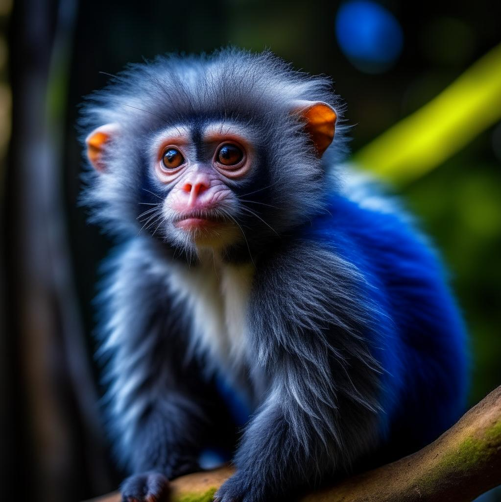
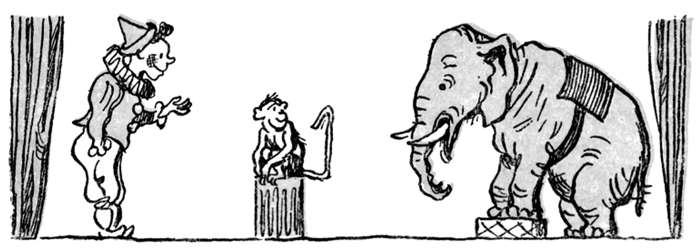
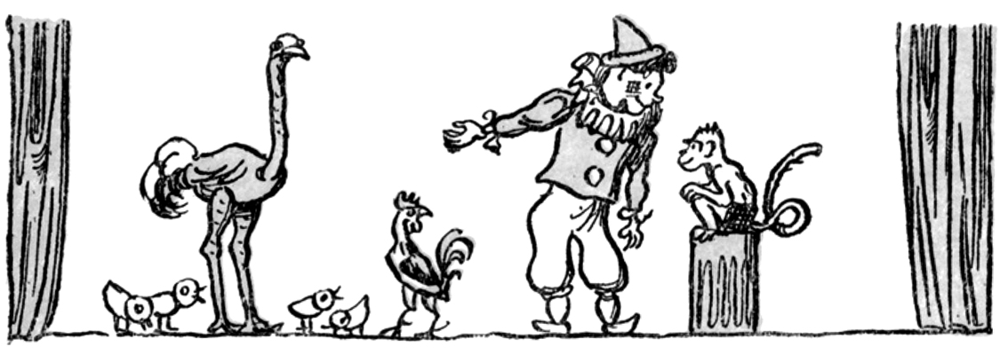
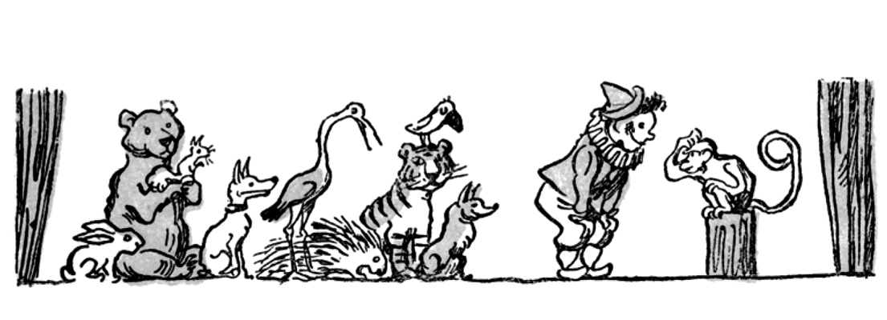
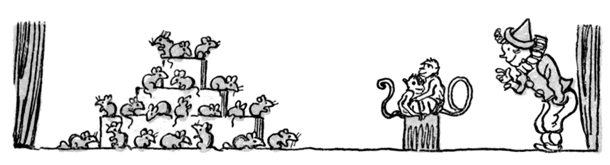
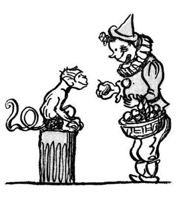

Учёная обезьянка
Михаил Зощенко
У одного клоуна была очень умная обезьянка. Она была очень развитая и хорошо соображала. И клоун научил её считать. И мало того, что она считала, — она ещё своим хвостиком умела изображать нужную цифру.
Клоун говорит обезьяне:
—А ну-ка, маленький Жако, скажи мне, сколько тут ты видишь слонов.
И наша маленькая обезьянка, поглядев на одного слона, сгибает свой хвост так, что он делается похожим на единицу.

Потом клоун говорит:
— Теперь ты видишь перед собой четырёх маленьких цыплят, петуха и страуса. Посчитай в своём уме, сколько тут их всего.
И каждый ребёнок, взглянув на хвостик, может сразу понять, сколько тут птиц.

Потом клоун говорит:
— Ну-ка, Жако, сосчитай, сколько тут видишь птиц и зверей.
И наша умненькая обезьянка показывает своим хвостиком то, что надо.

— А сколько тут мышей? — спрашивает клоун.
А мышей тут было так много, что наша обезьянка даже призадумалась. Потом сосчитала и видит, что её хвостик что-то не сгибается для такой большой цифры. И тогда она зовёт другую обезьянку.

— Ах, кажется, они не соврали! Подсчитайте-ка, ребята.
Наконец клоун говорит:
— Сосчитай, сколько в этой корзине яблок. Если правильно сосчитаешь, получишь в подарок все яблоки.
А в корзине было двадцать яблок. И наша обезьянка хотела позвать другую обезьянку, для того чтобы им вдвоём изобразить цифру двадцать. Но потом она, чтоб не делиться яблоками с другой обезьянкой, сама ухитрилась изобразить то, что нужно. И за это получила все яблоки. И если она теперь не объелась, то это прямо удивительно.
